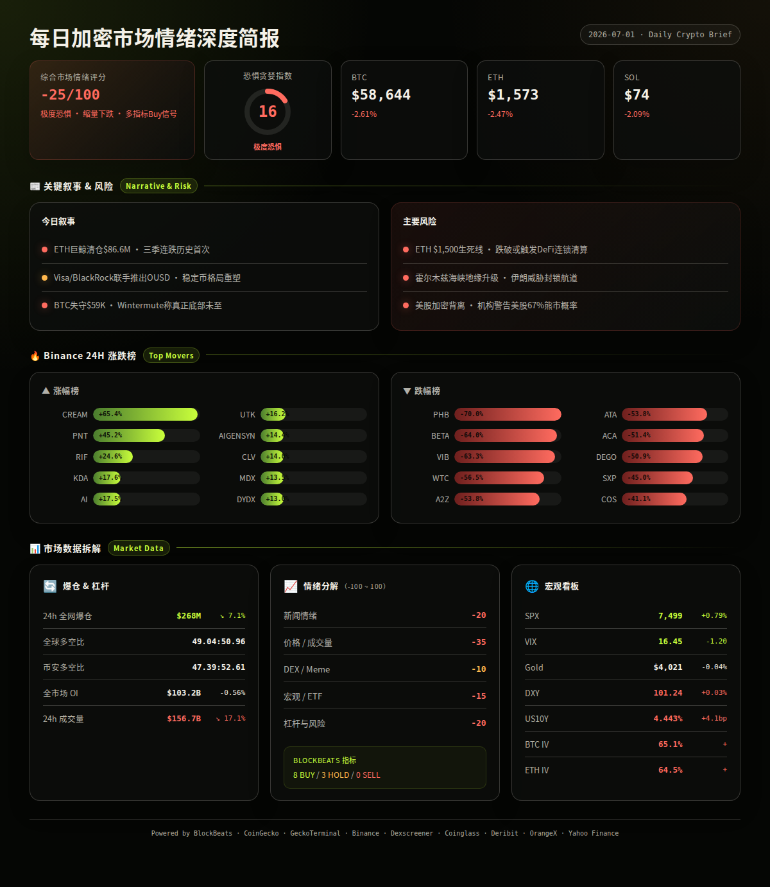
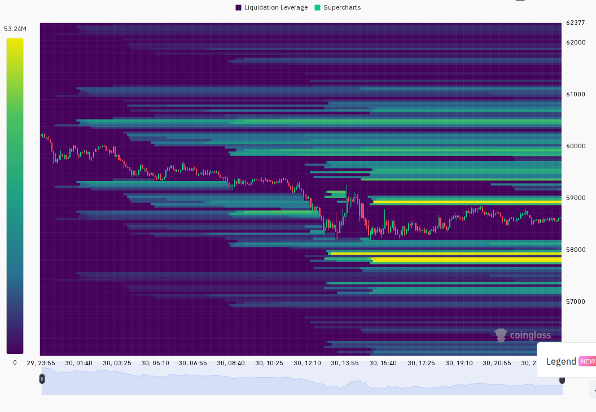
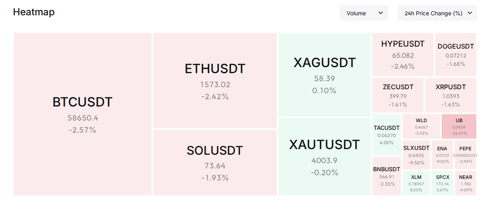

极端恐惧弥漫，BTC失守$59K；ETH创历史首现连续三季下跌，巨鲸清仓$86.6M加速探底
━━━━━━━━━━━━━━━━━━━━━━
⏰ 1. 24小时变化:
恐惧与贪婪指数 16 · 极度恐惧
BTC $58,644 -2.61%
ETH $1,573 -2.47%
SOL $74 -2.09%
VIX 16.45 -6.8% · 正常区间
成交量 $156.7B ↓17.1%
DXY 101.24 +0.03%
爆仓 $268.4M ↓7.1%
━━━━━━━━━━━━━━━━━━━━━━
—— BTC / ETH / SOL ——
BTC失守$59K，链上长期持有者持仓创历史新高暗示周期或已提前见底，但ETH面临三季连跌历史性弱势与巨鲸清仓双重压力。
信息 1：BTC跌破$59,000，24小时跌幅约2.6%。链上分析显示长期持有者持仓占比创历史新高，信号表明比特币周期可能已经提前筑底。(BlockBeats)
信息 2：ETH Q2跌幅达25.2%，首次出现连续三个季度亏损。FG Nexus已全部清仓51,200枚ETH，亏损$86.6M。(BlockBeats)
信息 3：Wintermute表示加密市场已进入熊市末期，但真正底部可能尚未到来。(BlockBeats)
信息 4：Grayscale报告称Solana已成为超过1,000个应用的结算层，处理超1亿笔交易。(BlockBeats)
信息 5：Binance Futures即将上线BTCU和ETHU币本位永续合约，支持最高100倍杠杆。(BlockBeats)
—— 宏观 / 地缘政治 ——
美股与加密市场罕见背离，SPX四连涨但加密持续走弱；中东霍尔木兹海峡局势升级，黄金在$4,000附近震荡。
信息 6：美国三大股指集体收高，SPX四连涨收于7,499点（+0.79%）。但机构警告美股出现两个罕见历史背离信号，67%概率未来一个月进入熊市。(BlockBeats, Yahoo Finance)
信息 7：伊朗拒绝承认1968年霍尔木兹海峡航行协议，威胁再次封锁关键航道；阿曼提议对伊朗征收过境费遭美方反对。(BlockBeats)
信息 8：美国5月职位空缺升至近两年新高，远超市场预期，劳动力市场韧性削弱美联储降息预期。(BlockBeats)
信息 9：UAE退出OPEC+，原油出口创历史新高；高盛等多家投行下调金价预测，黄金一度跌破$3,950。(BlockBeats)
信息 10：DXY报101.24（24h +0.03%，7d -0.15%），US10Y报4.443%（24h +4.1bp，7d -3.2bp）。美元短期微强但周线走弱，美债收益率小幅反弹。(BlockBeats)
—— AI / 半导体叙事 ——
AI叙事持续为市场提供结构性支撑，芯片硬件和基础设施融资热度不减。
信息 11：AI芯片公司Etched结束隐身模式，宣布$8亿融资及超$10亿预订单。(BlockBeats)
信息 12：日本将投资约$23.83亿支持软银主导的国产AI模型开发。(BlockBeats)
信息 13：Amazon AWS成立$10亿AI前端团队，对标AI部署模型。(BlockBeats)
信息 14：OpenAI推出新优化方案，模型推理成本降低超50%。(BlockBeats)
—— 值得关注的标的 ——
Binance 涨幅榜 (USDT):
· CREAM: +65.4%
· PNT: +45.2%
· RIF: +24.6%
· KDA: +17.6%
· AI: +17.5%
· UTK: +16.2%
· AIGENSYN: +14.4%
· CLV: +14.0%
· MDX: +13.5%
· DYDX: +13.0%
跌幅榜:
· PHB: -70.0%
· BETA: -64.0%
· VIB: -63.3%
· WTC: -56.5%
· A2Z: -53.8%
· ATA: -53.8%
· ACA: -51.4%
· DEGO: -50.9%
· SXP: -45.0%
· COS: -41.1%
—— 融资 / VC ——
信息 15：2026上半年融资排行榜出炉，Kalshi与Polymarket合计融资$18亿，占Top 14总额超40%。预测市场、AI、支付三大赛道最受资本青睐。(BlockBeats)
信息 16：Canton Network融资$3.55亿，Arc融资$2.22亿，Morpho融资$1.75亿，区块链基础设施仍受VC追捧。(BlockBeats)
信息 17：Rezolve AI股东批准最高$30亿股票回购计划，重申2026年收入指引。(BlockBeats)
—— X/Twitter KOL 信号 ——
信息 18：过去24小时3个List共抓取549条推文（覆盖率3/3），263秒处理。Top代币提及CRCL（5次/5人/偏空）、OUSD（4次/4人/偏空）、ANSEM（4次/4人/偏空）。叙事分布：未分类49%、加密市场21%、AI/Agent 15%、股票3%、DeFi 3%。(X Lists, analysis)
信息 19：高互动推文以非加密内容为主（政治、社会话题），Top 5均与加密无关，说明List中泛流量内容占比偏高。但$CRCL、$OUSD、$ANSEM多人重复提及且方向一致偏空，对应了CRCL暴跌17.55%与OUSD稳定币竞争两个实际市场事件，X信号在此处具有领先性。(X Lists, analysis)
信息 20：$BBH（2人/2人/偏多）、$DOT（2人/2人/偏多）出现多人偏多讨论，适合交叉验证价格是否未启动、成交量是否刚放大。但当前市场整体偏弱，这些偏多信号在极端恐惧环境下可能形成"左侧陷阱"。(X Lists, analysis)
━━━━━━━━━━━━━━━━━━━━━━
风险 1：ETH三季连跌 + 巨鲸清仓的连锁反应
ETH首次出现连续三个季度下跌，FG Nexus清仓51,200 ETH（-$86.6M）可能触发更多鲸鱼止损。若ETH进一步跌破$1,500心理关口，可能引发DeFi协议连锁清算。
观察：ETH $1,500关键支撑位，链上大额转账异动
失效条件：ETH站稳$1,600以上并伴随成交量放大 (BlockBeats, analysis)
──────────────────────
风险 2：霍尔木兹海峡地缘冲突升级
伊朗拒绝承认1968年航行协议并威胁封锁海峡，叠加UAE退出OPEC+，中东局势不确定性显著上升。若冲突升级推高油价，将对全球风险资产形成压力。
观察：油价走势、海峡通行状态、美方外交动态
失效条件：伊朗回到谈判桌或海峡通行恢复正常 (BlockBeats, analysis)
──────────────────────
风险 3：美股与加密背离的收敛方向
SPX四连涨但加密持续走弱，历史数据显示这种背离通常以加密补涨或美股补跌结束。机构警告美股67%概率进入熊市，若美股回调，加密可能加速下跌。
观察：SPX是否跌破7,400、VIX是否突破20
失效条件：BTC跟随美股反弹收复$60,000 (BlockBeats, Yahoo Finance, analysis)
──────────────────────
风险 4：稳定币竞争加剧与CRCL信任危机
Visa/Mastercard/BlackRock联手推出OUSD稳定币，Circle股价暴跌17%，CRCL暴跌17.55%。新稳定币格局可能导致USDC市场份额收缩，CRCL等关联代币面临持续抛压。
观察：OUSD发行量、USDC市值变化、CRCL是否跌破$60
失效条件：Circle/FalconX获得明确的监管优势或CRCL发布重大利好 (BlockBeats, analysis)
──────────────────────
风险 5：极度恐惧下的假底部风险
F&G指数16（极度恐惧），BlockBeats多指标显示Buy信号，但Wintermute明确警告"真正底部尚未到来"。2018/2022周期中F&G在极度恐惧区域可持续数周。
观察：F&G是否持续<20、成交量是否继续萎缩、OI是否加速下降
失效条件：F&G回升至25以上 + BTC放量突破$60,000 (BlockBeats, CoinGecko, analysis)
非财务建议声明: 本报告仅提供市场数据和情绪分析，不构成任何买卖建议。
━━━━━━━━━━━━━━━━━━━━━━
· 7/1 — Binance Futures上线BTCU/ETHU币本位合约（100x杠杆）— 短期可能推高波动率，双向爆仓风险增加 (BlockBeats)
· 7/1 — 2026上半年融资排行榜发布 — Kalshi+Polymarket合计$18亿，预测市场赛道热度持续 (BlockBeats)
· 7/2 — 美国ISM制造业PMI — 若低于预期可能强化衰退叙事，利空风险资产 (analysis)
· 7/3 — 美联储6月会议纪要 — 关注降息路径讨论，影响DXY和风险情绪 (analysis)
· 7/4 — 美国独立日假期 — 传统市场休市，加密可能出现低流动性波动 (analysis)
━━━━━━━━━━━━━━━━━━━━━━
综合评分: -25/100 (偏空 · 极度恐惧)
5 个维度:
新闻情绪: -20/100 — 负面主导：ETH巨鲸清仓$86.6M、CRCL暴跌17.55%、Circle跌17%、霍尔木兹海峡局势升级。正面信号包括AI融资活跃、稳定币采用扩大（88%企业计划采用），但整体情绪偏空。(BlockBeats, analysis)
价格/成交量: -35/100 — BTC/ETH/SOL全线下挫2-3%，成交量萎缩17%，量价齐跌。BTC跌破$59K关键心理位，ETH逼近$1,550支撑。仅SPX录得+0.79%上涨，加密与美股罕见背离。(Binance, CoinGecko, analysis)
DEX/meme 活跃度: -10/100 — 链上活跃度中等。ANSEM以$24.6M成交量领先Solana DEX，但多数热门池流动性不足$200K。无满足条件的新池出现（>50K流动性+>100K成交量）。Pump.fun类代币仍主导交易但质量偏低。Solana净流入集中在HYPE、LIKE、稳定币相关。(GeckoTerminal, BlockBeats, analysis)
宏观/ETF/流动性: -15/100 — 混合信号。SPX上涨但机构警告67%熊市概率；VIX回落至16.45正常区间；DXY微升+0.03%；US10Y +4.1bp；黄金$4,021横盘。总体风险偏好中性偏谨慎，但加密货币表现出独立弱势。(Yahoo Finance, BlockBeats, analysis)
杠杆与风险: -20/100 — 24h爆仓$268M虽环比下降7.1%，但绝对值仍偏高。OI微降0.56%至$103.2B，说明多头尚未大规模投降。期货溢价全面转负（BTC -0.05%、ETH -0.05%、SOL -0.05%），市场缺乏方向性信心。Binance TV多空比47.4:52.6略偏空。BTC/ETH期权IV均在65%左右（偏高），反映市场对波动的担忧。(Coinglass, Binance, Deribit, analysis)
BlockBeats Bottom/Top Indicator:
综合指标: 8个Buy / 0个Sell / 3个Hold
· 整体市场流动性: Buy（砸盘成本高，易成底部）
· BTC流动性: Buy · ETH流动性: Buy · 24h累积BTC流动性: Buy
· 合约多空比偏离: Buy · USDC/USDT溢价: Buy · Binance USDT借贷利率: Buy
· 山寨币抗跌: Hold · Bitfinex溢价: Hold · OI加权资金费率: Hold
(BlockBeats)


以下为基于多源数据交叉验证的概率情景分析：
情景 1 (概率: 40%, 置信度: 中):
ETH驱动的加速探底 — BTC在$57,000-$58,000区间获得支撑后反弹。
关键条件: ETH守住$1,500、美股不出现大幅回调、霍尔木兹局势不升级。
若发生则BTC目标$60,000-$61,000，ETH反弹至$1,650-$1,700，SOL回至$77-$79。BlockBeats多指标Buy信号 + F&G极度恐惧形成"左侧底部"结构。(multi-source, analysis)
情景 2 (概率: 35%, 置信度: 中):
恐慌加深，新低确认 — BTC跌破$57,000，向$54,000-$55,000区间寻找支撑。
关键条件: ETH跌破$1,500触发DeFi清算、美股开始回调（SPX跌破7,400）、或中东局势恶化推高油价。
若发生则BTC可能测试$54,000，ETH跌至$1,400-$1,450，SOL跌至$68-$70。这将确认Wintermute判断——"真正底部尚未到来"。(multi-source, analysis)
情景 3 (概率: 25%, 置信度: 低):
市场情绪快速修复 — BTC收复$60,000，加密跟随美股补涨。
关键条件: 美股继续走强（SPX突破7,600）、OUSD稳定币叙事被解读为行业利好、F&G快速回升至25以上。
若发生则BTC目标$62,000-$63,000，ETH反弹至$1,750-$1,800，SOL至$80-$82。此情景需外部催化剂打破当前弱势格局。(multi-source, analysis)
━━━━━━━━━━━━━━━━━━━━━━
· BTC: $58,644，24h -2.61%，成交量$11.7亿，高低区间$58,201-$60,277。短期趋势偏弱，24h内6根1h K线持续走低，未出现有效反弹。(Binance)
· ETH: $1,573，24h -2.47%，成交量$3.5亿，高低区间$1,550-$1,614。走势与BTC同步偏弱，$1,550为关键短期支撑。(Binance)
· SOL: $74，24h -2.09%，成交量$1.95亿，高低区间$72-$76。相对抗跌，跌幅小于BTC/ETH，但趋势仍跟随大盘。(Binance)
· 全球总市值: $2.12万亿 (CoinGecko)
· 爆仓数据: 24h全网爆仓$268.4M，环比下降7.1%。多空爆仓比例接近均衡，未出现单边踩踏。(Coinglass)
· OI 与成交量: 全球OI $103.2B（↓0.56%），24h成交量$156.7B（↓17.13%）。Binance OI $17.46B，Hyperliquid OI $6.36B，Bybit OI $8.69B。量缩价跌，市场参与意愿低迷。(Coinglass, BlockBeats)
· 宏观看板: SPX 7,499（+0.79%）/ VIX 16.45（-1.20，Normal）/ DXY 101.24（+0.03%）/ US10Y 4.443%（+4.1bp）/ Gold $4,021（-0.04%）。美股偏多但加密独立走弱，黄金横盘，宏观情绪中性。(Yahoo Finance, BlockBeats)
· 期权波动率: BTC ATM IV 65.08%（偏高），ETH ATM IV 64.48%（偏高）。ETH-BTC IV差-0.60pp，未出现altcoin投机溢价，市场风险偏好偏低。(Deribit)
以下基于 CoinGecko trending + GeckoTerminal DEX 数据交叉验证：
ANSEM (Solana):
价格$0.14，24h +10.1%，市值$58M。
DEX: 流动性$1.39M，24h成交量$24.6M，买卖比59,974:43,417。
催化剂: Solana链上最活跃DEX代币之一，24h成交量$24.6M位列Solana DEX第一。X信号中4人提及偏空讨论，需注意风险。
风险: 流动性仅$1.39M支撑$24.6M成交量，换手率极高，典型meme币波动特征。(GeckoTerminal, X Lists)
SYN (Ethereum):
价格约$1.95，24h +9.8%（CoinGecko trending #2）。
催化剂: SYN 24h涨幅超67%，30天累计14倍涨幅。CoinGecko热度排名第2。
风险: 已大幅上涨，追高风险极高；需关注是否存在跨链叙事或协议升级驱动。(CoinGecko, BlockBeats)
OUSD (新稳定币):
催化剂: Visa、Mastercard、BlackRock等巨头联手推出，140+机构参与。Circle股价暴跌17%，CRCL暴跌17.55%均与OUSD竞争直接相关。X信号4人提及。
风险: 新稳定币竞争格局尚未明朗，USDC市场份额可能被侵蚀，但OUSD本身尚未在二级市场形成可交易标的。(BlockBeats, X Lists)
━━━━━━━━━━━━━━━━━━━━━━
· GeckoTerminal Solana trending pools (24h 成交量 > $1M): top 3 pools
1. ANSEM/SOL: 成交量$24.6M，+10.1%，流动性$1.39M (GeckoTerminal)
2. TJR/SOL: 成交量$23.9M，-46.4%，流动性$81K（⚠️极低流动性）(GeckoTerminal)
3. LUKE/SOL: 成交量$16.5M，+1038.5%，流动性$59K（⚠️极低流动性）(GeckoTerminal)
· BlockBeats Solana top10_netflow:
1. HYPE: 净流入+$1.39M，市值$56M (BlockBeats)
2. LIKE: 净流入+$1.08M，市值$9.7M (BlockBeats)
3. SYRUPUSDC: 净流入+$684K，市值$1.29B (BlockBeats)
4. SPCX: 净流入+$657K，市值$12.2M (BlockBeats)
5. ZEC: 净流入+$568K，市值$32M (BlockBeats)
· 备注:
当前Solana链上DEX交易呈现出典型的熊市末期meme/pump特征——高成交量集中在极低流动性池（TJR $81K支撑$23.9M交易量、LUKE $59K支撑$16.5M交易量），风险极高。相比之下，ANSEM（$1.39M流动性）和NEST（$1.72M流动性）相对安全。机构级稳定币资金（SYRUPUSDC +$684K）和跨链资产（HYPE +$1.39M）在净流入榜前列，说明部分资金在向"安全资产"转移。CoinGecko板块显示Commodities Meme（+27.9%）、Olympus Pro（+27.3%）逆势上涨，暗示仍有小规模资金在进行高风险博弈。(multi-source, analysis)